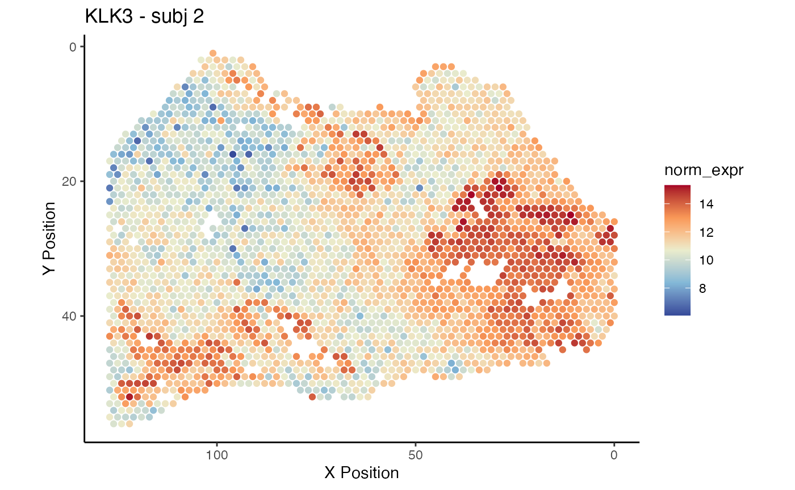
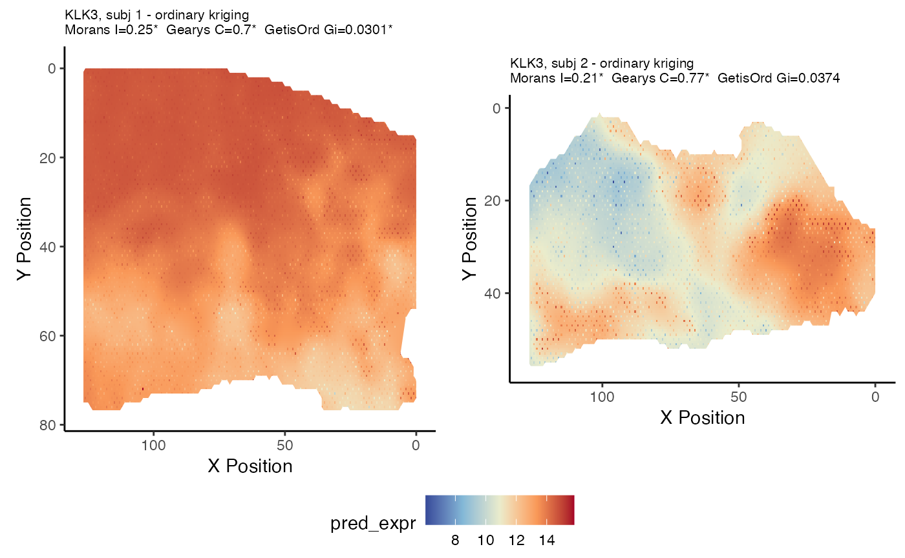

prostatecancer_Visium_vignette.RmdThe package spatialGE provides a set of tools for the visualization of gene expression from spatially-resolved arrays. In this vignette we explore gene expression in two Visium data sets: One of normal prostate tissue and other with prostate adenocarcinoma. These data sets were generated with the Visium FFPE technology, but the instructions in this vignette can be used with regular Visium data sets. In this vugnette, we introduce the Python implementation of kriging in spatialGE. We use PyKrige to generate transcriptomic surfaces in order to reduce run time of the interpolation. Nonetheless, kriging is a computationally expensive procedure, and even though PyKrige results in ~3X increases in speed, the interpolation of a Visium data set (~3,000 - 4,000 spots) takes some time.
spatialGE uses reticulate to bridge with the Python module PyKrige. To do this, a Python environment needs to be set up. We recommend installing Anaconda and create an environment (r-reticulate in this example), then install PyKrige within that environment. Next, the path to the Python environment needs to be set up for R to find it. The set up is done in the .Renviron file. On Mac OS, this is done by typing in the Terminal:
echo "RETICULATE_PYTHON=\"$HOME/opt/anaconda3/envs/r-reticulate/bin/python3\"" >> ~/.RenvironThe data sets are freely available and can be downloaded from the 10X Resources website. You may be asked toregister your information before accessing the data. The normal prostate (FFPE) can be downloaded here and the adenocarcinoma sample here. For this vignette, we assume the data will be downloaded in two folders on the computer’s Desktop. At the very least, the user will need to download ‘Spatial imaging data’ and the ‘Feature / cell matrix (raw)’ from each link.
The links to ‘Spatial imaging data’ and the ‘Feature / cell matrix (raw)’ contain compressed .tar.gz files. You can double click the files to decompress them.
The spatialGE repository is available at GitHub and can be installed via devtools. To install devtools, in case is not installed in your R console, please run the following code:
if("devtools" %in% rownames(installed.packages()) == FALSE) {
install.packages("devtools")
}After making sure devtools is installed, proceed to install spatialGE:
# devtools::install_github("fridleylab/spatialGE")To use spatialGE, load the package using the command:
library(spatialGE)Raw and processed data are stored in an STList (an R S4 class object). The STList can be created with the function STList(), and in the case of Visium data, only the file paths to the Visium folders need to be provided. Each folder must contain at least two subfolders: filtered_feature_bc_matrix and spatial. The filtered_feature_bc_matrix contains the files features.tsv.gz, barcodes.tsv.gz, and matrix.mtx.gz. The spatial folder contains tissue_positions_list.csv.
The user also provides array IDs partially matching names of the folders. Optionally, the Visium folders can be provided in the second column of the sample meta data table along with clinical/phenotype data associated with each spatial array. The first column contains array IDs.
Assuming the folders are in the computer’s Desktop, we specify the file paths.
visiumfp <- c('~/Desktop/Human_Prostate_Cancer_Adenocarcinoma_Invasive_Carcinoma_FFPE/',
'~/Desktop/Normal_Human_Prostate_FFPE/')Then, we load the file paths to the STList function.
prvisium <- STList(rnacounts=visiumfp, samples=c('Adenocarcinoma', 'Normal'))
#> Loading required package: parallel
#> Creating STList...The prvisium object is an STList.
prvisium
#> Spatial Transcriptomics List (STList).
#> 2 spatial array(s):
#> Adenocarcinoma
#> NormalIn spatialGE, we apply voom transformation to the RNA-Seq libraries fromeach of the spots in order to obtain a gaussian-shape normal distribution required by most methods in this package. Many of the methods implemented in spatialGE have been borrowed from the field of geostatistics, which often require this kind of data transformation
Transformation is achieved by applying the function voom_norm().
prvisium <- voom_norm(prvisium)
#> Loading required package: magrittrWe can plot now the gene expression levels of specific genes. Let’s see KLK3:
qplot <- plot_gene_quilt(prvisium, genes='KLK3', color_pal='sunset', plot_who=2)
#> Loading required package: ggplot2
qplot
#> $KLK3_2
We can also generate transcriptomic surfaces for the samples using the PyKrige implementation:
prvisium <- gene_krige(prvisium, genes='KLK3', univ=F, python=T)We can now plot the transcriptomic surfaces.
kplot <- plot_gene_krige(prvisium, genes='KLK3', color_pal='sunset')
#> Loading required namespace: rgeos
ggpubr::ggarrange(plotlist=kplot, ncol=2, common.legend=T, legend='bottom')
As expected, the expression of KLK3, known as prostatic antigen, is higher across the entire cancerous sample (‘subj 1’), compared to the normal sample (‘subj 2’).